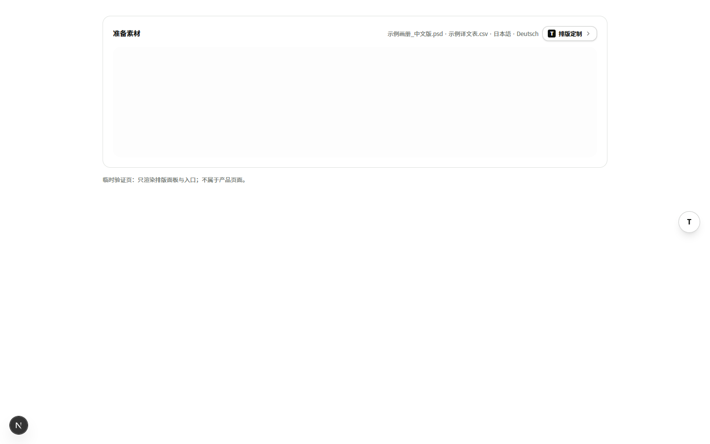
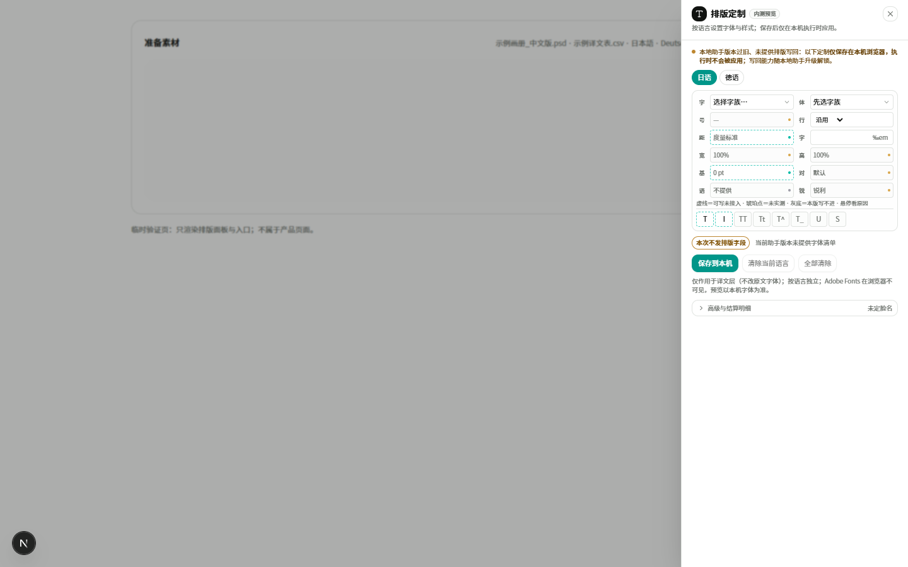
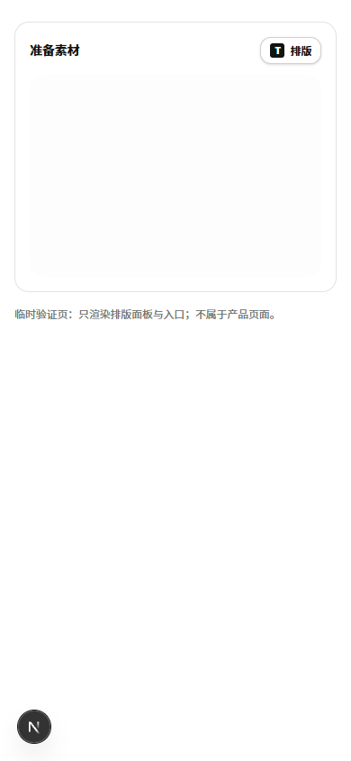
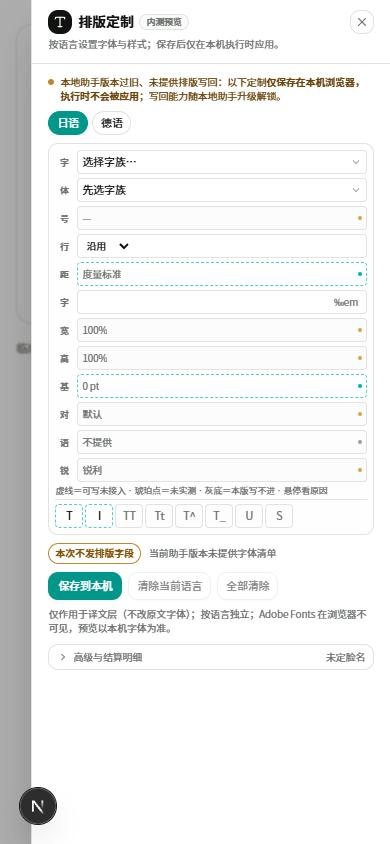
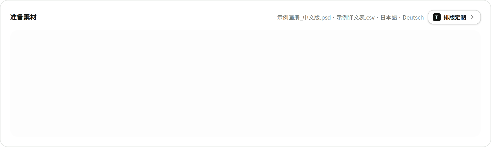
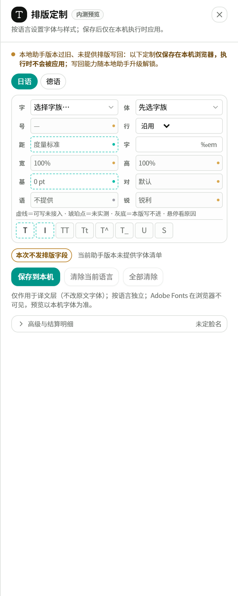

对抗式审查/排版面板入口/2026-10-20
测试站为什么没按设计稿走、这次怎么接、接完拿什么证明。结论先说：不是样式没调好，是设计稿从未接到产品。
设计稿停留在独立模拟台，产品里只有 6ff5c3c 的右下角药丸 + 内联折叠；卡头按钮、悬浮球、360px 抽屉、dialog 语义、Esc 焦点归还都没有落地。
| 事实 | 证据 |
|---|---|
测试站基线 6ff5c3c | /api/runtime-provenance → webCommitSha=6ff5c3c1414ff09f3fc4bb8940c462aa3fb2e760 |
| 该提交只有右下药丸 | 提交标题「排版定制加右下角悬浮入口（面板不挪位，避免撞位置守卫与丢配色）」；diff 为 fixed bottom-24 right-4 药丸 + 内联面板 |
| 设计稿自述未接产品 | 设计稿说明.md:39：「卡头按钮、悬浮球、抽屉这套入口和埋点尚未接到产品」 |
| 固定规则 | 设计稿说明.md:21-25：≥1280 两者同现；<1280 只留卡头；360px / 92vw；球随抽屉隐藏；Esc 焦点归还；背景 inert；关闭再开保留草稿 |
| portal 色板坑 | workbench-tokens.css 文件头「已知边界」：portal 容器不挂 .wb-brand 会退回旧色板 |
挂载点不动，抽屉在组件内 portal 到 body；位置断言与 picker 断言未改口径。
抽屉外层补 .wb-brand；实测字体为 Tuyigf Source Han Sans 家族。
role=dialog、aria-modal、Esc、Tab 闭环、背景 inert、锁滚动、关闭恢复；实测焦点先落关闭按钮。
球 hidden xl:block；390 实测 display:none，无横向溢出。
dirty 按「与已存盘内容是否不同」算，面板回传，两个入口各显示琥珀点。
本机偏好只在首次打开读一次；关闭不重置状态，组件保持挂载。
「轻量原生碳」＝纸面承载 + 碳色身份；不做纯黑实心，避免与主操作争注意力。
本任务提交 027118f；develop 其后落了 6a268fe（助手事故修复）。预检禁止落后打包，候选只能是 6a268fe，会一并带上那笔已提交修复。
第一版 Esc 关闭后焦点掉到 body：不是没写 focus()，而是背景还带 inert 时调用被静默丢弃，requestAnimationFrame 抢在 React 被动 effect 清理之前。改为在面板 cleanup 里先移除 inert、再聚焦打开前的 activeElement；复测焦点回到卡头按钮。
| 层 | 改动 |
|---|---|
| typography-panel.tsx | 受控 props open/onClose/onDirtyChange；关闭不渲染但保持挂载；portal + .wb-brand；遮罩点击/Esc 关闭；Tab 闭环；背景 inert + 锁滚动；关闭归还焦点。 |
| workbench-view.tsx | 新增抽屉开关与 dirty 状态；卡头按钮；44px 悬浮球；删除 6ff5c3c 的右下药丸与 expandSignal；#workbench-surface 供 inert 定位。 |
| typography-picker.test.tsx | 适配新 props；新增 dialog 语义、Esc 关闭、关闭不渲染 3 条。 |
| 出包 | 隔离 worktree 跑预检与 package，避免污染共享工作树；上传 zip + receipt；服务器执行 deploy-test-release.sh；回读 .deploy-commit 与 provenance。 |
npx tsc --noEmitrc=0npx eslint 三个改动文件0 errorstest:typography-picker：smoke 197 + vitest 6PASSsmoke-typography-customization 60 断言PASSnpm run build：编译/TS/128 页/standalone/助手合同全走完；PowerShell 把 Turbopack warning 误报成 NativeCommandError单步复跑 rc=0





bg-foreground/35 + 1px 模糊；偏好更轻可降到 /25，只改一行样式。6a268fe 会同时带上助手事故修复。develop。